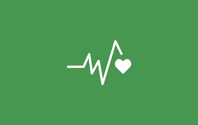
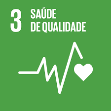
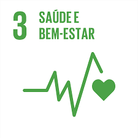

Objetivo de Desenvolvimento Sustentável 3 (ODS 3), criado pela Organização das Nações Unidas, tem como objetivo garantir uma vida saudável e promover o bem-estar para todas as pessoas, em todas as idades. Esse objetivo busca melhorar a qualidade dos sistemas de saúde, reduzir a mortalidade, combater doenças como HIV/AIDS, malária e tuberculose, além de incentivar a prevenção de doenças e o acesso universal a serviços de saúde de qualidade. Dessa forma, a ODS 3 contribui para uma sociedade mais saudável e com melhor qualidade de vida.
Cuidar da saúde é essencial para garantir qualidade de vida e bem-estar. Manter uma alimentação equilibrada, praticar atividades físicas regularmente, dormir bem e cuidar da saúde mental são hábitos fundamentais para o bom funcionamento do organismo. Além disso, realizar consultas médicas e exames de rotina ajuda na prevenção de doenças e na identificação precoce de possíveis problemas de saúde, aumentando as chances de tratamento eficaz. Adotar esses cuidados no dia a dia contribui para uma vida mais longa, saudável e equilibrada.

A ODS 3 tem como objetivo garantir saúde e bem-estar para todas as pessoas. Suas principais contribuições incluem a redução da mortalidade infantil e materna, o combate a doenças, a prevenção de problemas de saúde e a ampliação do acesso a serviços de saúde de qualidade. Em projetos, também incentiva ações de promoção de hábitos saudáveis, vacinação, acesso a medicamentos e fortalecimento dos sistemas de saúde, contribuindo para melhorar a qualidade de vida da população e o desenvolvimento sustentável das comunidades.